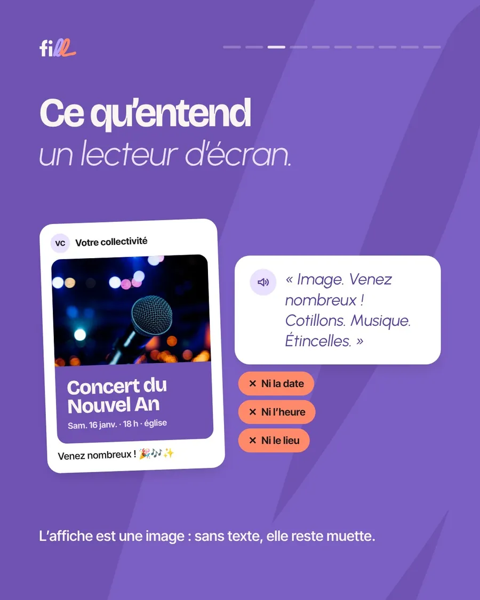
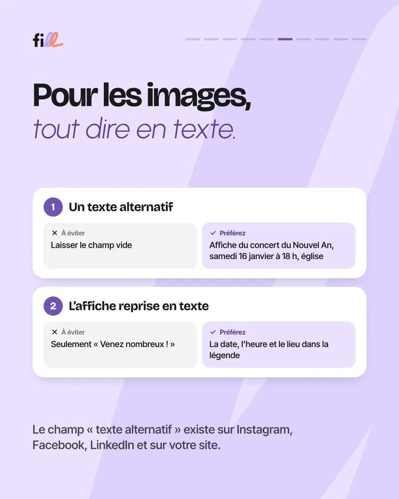
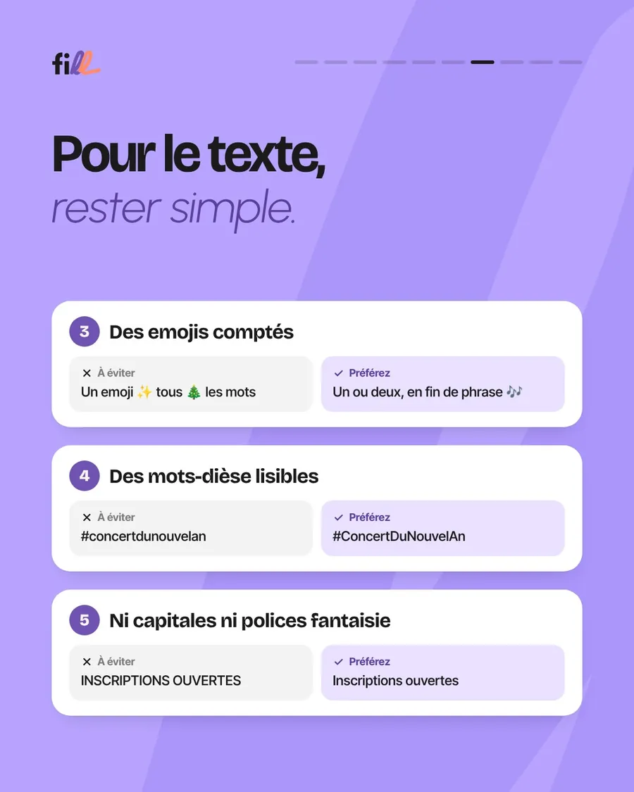
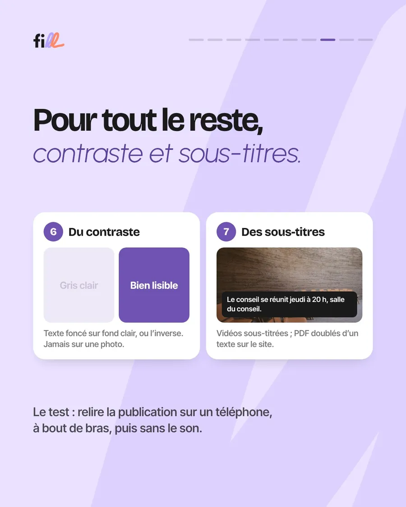
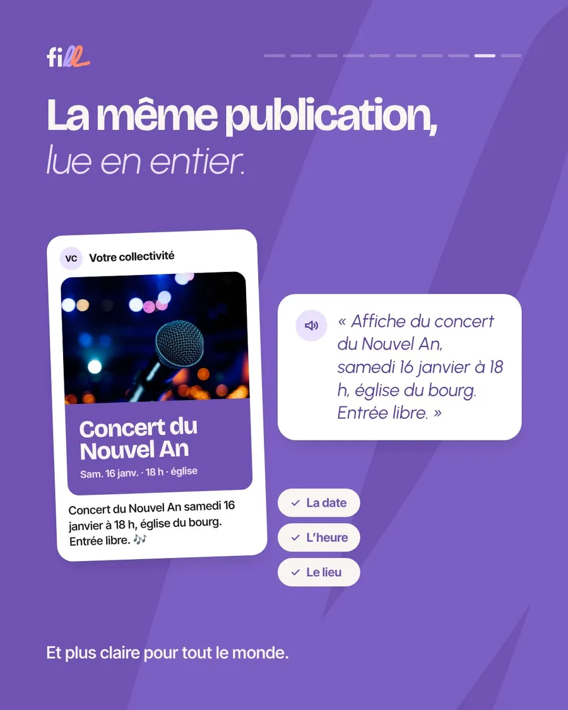

Affiches, programmes, horaires : sur les réseaux sociaux, une grande partie de l’information passe par une image. Pour une personne qui utilise un lecteur d’écran, une affiche publiée sans texte ne dit ni la date, ni l’heure, ni le lieu. Pour les communes, c’est une obligation légale ; pour tout le monde, c’est une question de clarté. Sept gestes suffisent, à chaque publication.
Beaucoup d’informations passent par une image
Chaque semaine, une commune ou une entreprise publie des informations dont l’essentiel est écrit dans une image : l’affiche du concert, les horaires des fêtes en visuel, la vidéo des vœux parlée et sans sous-titres. Pour la plupart des lecteurs, cela ne pose aucun problème. Pour certains, l’information n’existe pas.
Ce qu’entend un lecteur d’écran
Une personne aveugle ou malvoyante utilise un lecteur d’écran : un logiciel qui lit à voix haute le contenu de la page. Face à une affiche publiée sans texte de description, voici ce qu’il peut lire :
« Image. Venez nombreux ! Cotillons. Musique. Étincelles. »
Ni la date, ni l’heure, ni le lieu. Le texte de la publication se limitait à une invitation enthousiaste et à une ligne d’emojis, que le lecteur d’écran énonce un par un. L’affiche, elle, reste muette.

Pas seulement quelques personnes
L’accessibilité ne concerne pas qu’un petit nombre de lecteurs. Trois situations courantes reviennent chaque jour :
- le lecteur d’écran, utilisé par les personnes aveugles ou malvoyantes ;
- le texte agrandi, pour une vue fatiguée ou une lecture sur un petit écran ;
- la vidéo sans le son, regardée dans le bus, au bureau ou tard le soir.
Une partie de vos lecteurs vous lit déjà ainsi, sans que vous le sachiez.
Ce que dit la loi
Pour les communes et les services publics, l’accessibilité est une obligation. L’article 47 de la loi du 11 février 2005 impose que les services de communication au public en ligne des organismes publics soient accessibles aux personnes handicapées. Le référentiel général d’amélioration de l’accessibilité (RGAA) en fixe les critères.
Pour les entreprises, un cadre européen s’applique depuis le 28 juin 2025 : la directive européenne sur l’accessibilité, transposée en droit français, concerne certains produits et services numériques, dont le commerce en ligne, les services bancaires et les transports. Les microentreprises qui fournissent des services en sont exemptées, mais les gestes qui suivent restent utiles à tous.
Dans les deux cas, cela commence par des gestes simples, à chaque publication.
Pour les images : tout dire en texte
1. Un texte alternatif
Le texte alternatif est la description d’une image, lue par le lecteur d’écran à sa place. Le champ existe sur Instagram, Facebook, LinkedIn et dans la plupart des sites internet, souvent dans les paramètres avancés de la publication.
| À éviter | À préférer |
|---|---|
| Laisser le champ vide | « Affiche du concert du Nouvel An, samedi 16 janvier à 18 h, église du bourg. » |
Un bon texte alternatif dit ce que l’image apporte, pas ce qu’elle montre au pixel près : pour une affiche, l’événement, la date, l’heure et le lieu.
2. L’affiche reprise en texte
Le texte alternatif ne suffit pas toujours : tous les réseaux ne l’affichent pas de la même façon, et il n’aide pas une personne qui agrandit le texte. La légende de la publication doit donc reprendre les informations essentielles de l’affiche.
| À éviter | À préférer |
|---|---|
| Seulement « Venez nombreux ! » | La date, l’heure et le lieu écrits dans la légende |

Pour le texte : rester simple
3. Des emojis comptés
Un lecteur d’écran énonce chaque emoji par son nom. Une phrase où un emoji sépare chaque mot devient incompréhensible. Un ou deux emojis, placés en fin de phrase, ne gênent personne.
4. Des mots-dièse lisibles
Un mot-dièse écrit d’un seul bloc en minuscules est lu comme un mot inconnu. En mettant une majuscule à chaque mot, le lecteur d’écran le découpe correctement.
| À éviter | À préférer |
|---|---|
| #concertdunouvelan | #ConcertDuNouvelAn |
5. Ni capitales ni polices fantaisie
Un texte entièrement en capitales est plus difficile à lire, et certains lecteurs d’écran l’épellent lettre par lettre. Les polices « fantaisie » obtenues par copier-coller depuis un générateur de texte sont pires encore : ce sont des symboles mathématiques, que le lecteur d’écran lit comme tels.
| À éviter | À préférer |
|---|---|
| INSCRIPTIONS OUVERTES | Inscriptions ouvertes |

Pour tout le reste : contraste et sous-titres
6. Du contraste
Un texte gris clair sur fond blanc, ou blanc sur une photo, se lit mal sur un téléphone en plein soleil, et pas du tout avec une vue fatiguée. La règle est simple : texte foncé sur fond clair, ou l’inverse, et jamais de texte posé directement sur une photo.
7. Des sous-titres
Une vidéo parlée sans sous-titres est inaccessible aux personnes sourdes ou malentendantes, et à tous ceux qui la regardent sans le son. Les sous-titres peuvent être générés automatiquement par la plupart des outils, puis relus. Pour un document PDF (un programme, un bulletin), une version texte sur le site rend le même service.

Le test avant de publier
Avant chaque publication, un test simple permet de vérifier l’essentiel : relire la publication sur un téléphone, à bout de bras, puis sans le son. Si la date, l’heure et le lieu se comprennent dans les deux cas, la publication est lisible par tous.

Les sept gestes en résumé
- Un texte alternatif sur chaque image.
- Les informations de l’affiche reprises dans la légende.
- Un ou deux emojis, en fin de phrase.
- Des mots-dièse avec une majuscule à chaque mot.
- Ni capitales ni polices fantaisie.
- Un texte bien contrasté, jamais posé sur une photo.
- Des sous-titres sur les vidéos, une version texte des PDF.